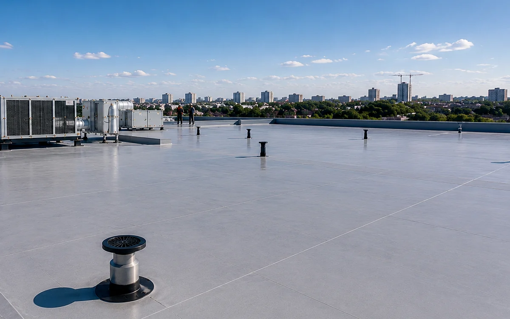

Щоб розібратися з темою «як перевірити покрівлю після сильного вітру», дивляться на весь вузол у роботі: звідки надходить волога, куди вона відводиться і що відбувається під покриттям.
Огляд після вітру
Починати варто з безпечного огляду та фіксації ознак. Важливо зрозуміти, коли проявляється проблема, чи змінюється вона після дощу, вітру або перепаду температури.
Що перевіряють
На об’єкті звертають увагу на такі елементи:
- краї листів
- коник
- карниз
- добірні елементи
- сміття
Як оцінюють ситуацію
Рішення залежить від стану основи, доступу до прихованих шарів і того, чи є дефект локальним. Поверхневе виправлення має сенс лише тоді, коли причина знаходиться у доступному вузлі, а сусідні елементи залишаються справними.
Помилки, яких варто уникати
- вихід на дах під час вітру
- повернення деформованих листів без перевірки
- ігнорування кріплень
- ремонт лише видимого місця
Видима ділянка часто є лише місцем виходу води. Причина може знаходитися вище по схилу або всередині суміжного вузла.
Коли потрібен огляд
Якщо дефект повторюється або поширюється, потрібен огляд. Фотографії корисні для попереднього розуміння, але вони не показують вологу всередині утеплювача, стан деревини та приховані стики.
Поширені запитання
Чи можна перевірити проблему без розбирання?
Частину ознак видно без демонтажу. Відкривати конструкцію потрібно лише там, де інакше неможливо встановити причину.
Що підготувати перед консультацією?
Загальні фотографії даху, крупні плани проблемної ділянки, знімки з горища та короткий опис умов, за яких з’являється дефект.